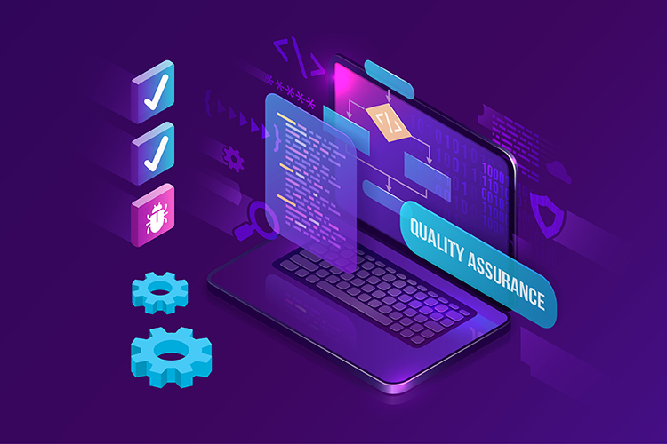

QA Test Engineer
Greetings! I'm Sriram - Aspiring QA Test Engineer, an enthusiastic and eager fresher looking to embark on a fulfilling journey in the world of QA Testing. While I may be new to the field professionally, my passion for technology and my analytical mindset have driven me to pursue a career in ensuring software quality.During my academic pursuits, I cultivated a solid foundation in software development methodologies and testing principles. I am adept at creating test cases, conducting manual testing, and documenting results meticulously. I'm also eager to explore automated testing techniques to enhance efficiency and accuracy in the QA process. I thrive in collaborative environments and am excited about the prospect of working alongside seasoned professionals to learn and grow. I am committed to embracing challenges, seeking mentorship, and continuously expanding my skill set to become a valuable asset to any team. While my journey in QA Testing is just beginning, I approach it with boundless curiosity and a determination to excel. I am eager to contribute my fresh perspective, enthusiasm, and dedication to ensuring the quality and reliability of software products. Outside of my professional aspirations, I enjoy listening to music, finding inspiration and balance in diverse experiences that enrich both my personal and professional growth. I am enthusiastic about the opportunity to kick-start my career in QA Testing and make meaningful contributions to your esteemed organization.
Bachelor of Engineering in Mechanical Engineering
Sri Ramakrishna
Engineering College - 2022
Academic Projects :
Objectives
- Reduce Waste: Minimize expired or obsolete inventory.
- Improve Product Quality: Ensure customers receive fresh products.
- Enhance Efficiency: Streamline inventory management processes.
- Better Cash Flow: Increase inventory turnover for improved cash flow.
- Regulatory Compliance: Meet industry standards for product traceability and shelf
life.
Auctor commodo interdum et malesuada fames ac ante ipsum primis in faucibus. Pellentesque venenatis dolor imperdiet dolor mattis sagittis.